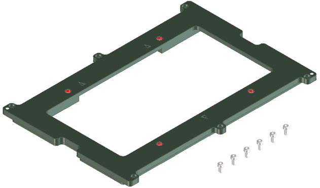

Stiffener inlay plate E6980DD
The E6980DD inlay plate supports all Synax and Seiko-Epson Handlers except the Seiko Epson TR55. Use the E6980DC inlay plate with the Seiko Epson TR55. Inlay plate E6980DD has four M5 threaded holes.

Functional changes
- Introduced before SmarTest 6.3.2